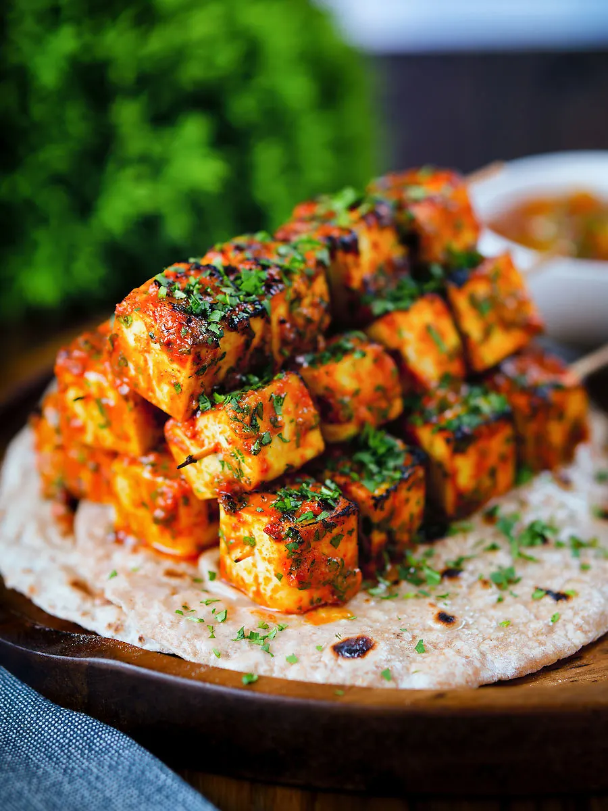

Tikka ji
Home

Description
Paneer Tikka is a popular North Indian appetizer made by marinating chunks of paneer (Indian cottage cheese) in a spiced yogurt mixture and grilling them until smoky and golden.
The marinade usually includes yogurt, ginger-garlic paste, chili, turmeric, garam masala, and lemon juice,
which coat the paneerand vegetables like onions, capsicum, or tomatoes.
Traditionally cooked in a tandoor, it can also be made on a grill or stovetop.
Served hot with green chutney and onion rings, Paneer Tikka is known for its smoky flavor, soft paneer, and spicy-tangy taste,
making it a favorite vegetarian alternative to kebabs.
Ingrediants
- Paneer cubes
- Thick curd (yogurt)
- Gram flour (besan)
- Ginger-garlic paste
- Lemon juice
- Oil – 1 tbsp
- Turmeric powder
- Red chili powder
- Garam masala
- Cumin powder
- Coriander powder
- Chaat masala
- Salt – to taste
- Onion – 1 (cubed)
- Capsicum – 1 (cubed)
- Tomato – 1 (cubed)
- Ginger-garlic paste – 1 tbsp
Steps
- In a bowl add curd, gram flour, ginger-garlic paste, lemon juice, oil, turmeric, red chili powder, garam masala, cumin, coriander, chaat masala, and salt. Mix into a marinade.
- Add paneer cubes, onion, capsicum, and tomato. Coat well.
- Cover and marinate 30–60 minutes in fridge.
- Thread onto skewers or just place on a hot tawa.
- Cook with little oil till golden and slightly charred (or bake at 200°C for 15–20 min).
- Sprinkle chaat masala. Serve with green chutney.